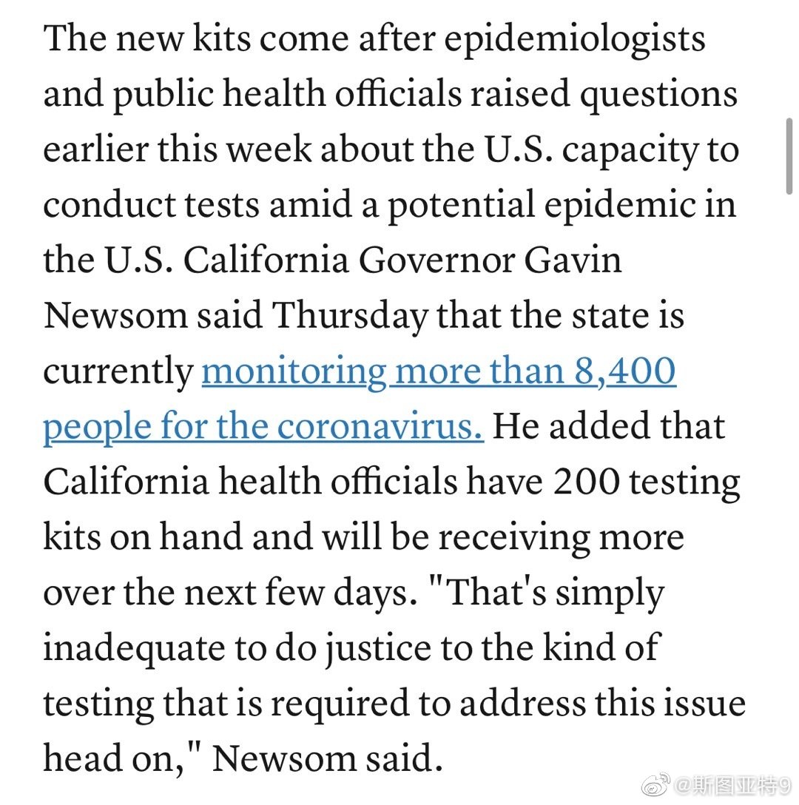
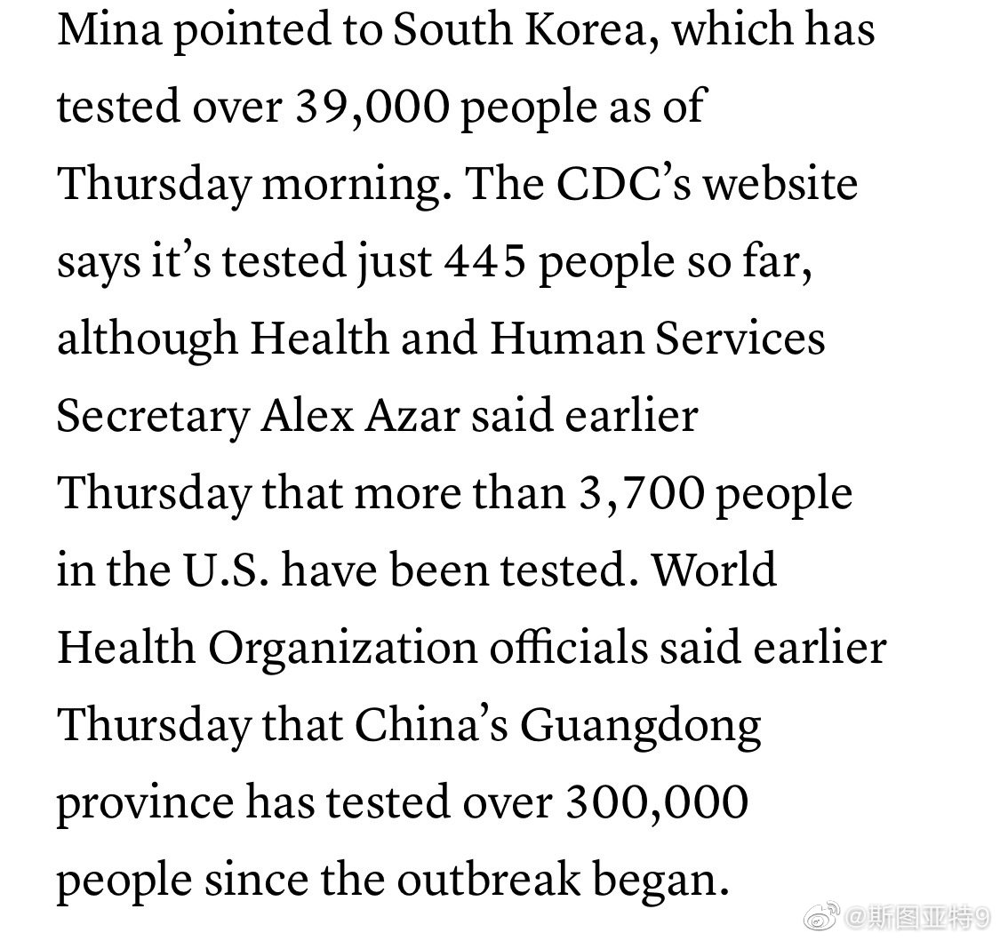

昨天FDA发了个关于新冠试剂盒的新政策。允许一些实验室进行他们自己设计的测试而不需要FDA批准： 网页链接 同时给了纽约州两个实验室紧急授权测试。再不允许各州自己测试，他们就疯了吧。就这样感觉也已经晚了。未来一两周美国的病例数到底体现的是感染数还是测试容量真不好说。
加州州长周四说加州只有200个试剂盒。截至周五，韩国一共测试了35000例，中国光广东就测了30万例，美国只测试了445例。美国自己没能力生产足够的试剂盒，就不能乖乖海外进口？就这样还才现在才开始考虑开放商业公司开发的试剂盒？ 

 网页链接 没Costco会员的不理解：为什么都在Costco抢，不去其他店？
网页链接 没Costco会员的不理解：为什么都在Costco抢，不去其他店？